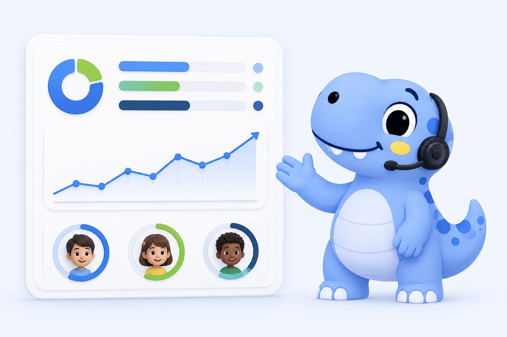

01
Conhecer
Uma triagem breve identifica preferências, formas de comunicação e o apoio necessário para iniciar.
Educação inclusiva que se adapta
Uma experiência de aprendizagem acessível para pessoas neurodivergentes e estudantes com diferentes necessidades cognitivas — respeitando ritmos, formas de comunicação e maneiras de aprender.
Ver como funciona
Aprender do seu jeito
A plataforma organiza cada etapa para reduzir sobrecarga, ampliar a autonomia e tornar o inglês mais próximo da realidade de cada estudante.
Uma triagem breve identifica preferências, formas de comunicação e o apoio necessário para iniciar.
Textos, imagens, áudio, tamanho dos controles e complexidade mudam conforme o perfil de aprendizagem.
O estudante avança sem pressão, enquanto o educador acompanha resultados e identifica próximos passos.
Experiência multimodal
Imagens, sons, palavras e interações trabalham juntos. O estudante pode reconhecer, praticar e validar o conteúdo com instruções claras e estímulos na medida certa.

Para professores e escolas
Relatórios objetivos mostram evolução, acertos e pontos de atenção. A escola acompanha cada estudante sem transformar inclusão em mais trabalho administrativo.
Assinaturas institucionais
A escola paga conforme o número de estudantes atendidos, com previsibilidade de custos e espaço para ampliar seu impacto.
No plano anual, sua escola recebe até 30% de desconto.
Até 5 alunos
R$249/mês
Escolher AcolherMais escolhido
Até 15 alunos
R$599/mês
Escolher CrescerAté 35 alunos
R$1.199/mês
Escolher ImpactarEnglish for All Voices
Leve uma experiência mais acessível, humana e adaptável para sua escola.